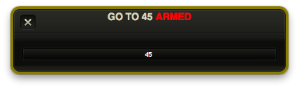
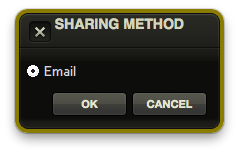

Quick Start
Now that you have RMS Coach® fully installed, let's explore the robust features available at your fingertips!
Interface Overview
- Metronome - Activating this icon turns on a metronome click during playback.
- Meter - Shows the current meter at the playback marker (the red line) in the Timeline.
- Position - Shows the current position of the playback marker, by measure number and beat.
- Transport - Controls for starting and stopping playback.
- Tempo - Shows the programmed tempo and tap rhythm as well as the user defined tempo and tap rhythm. You can push the circular arrow key to revert to default.
- Key - Allows the user to quickly move the key of the song up or down, and you can use the circular arrow key to revert to default.
- Timeline - Shows a general overview of the form of the song, as well as the current position and any edits made to the form, such as (cuts, vamps, attaccas, etc).
- Songs - Shows the list of songs for the given show. If you are in trial mode, unavailable songs will be grayed out.
- Parts - A list of vocal parts for the selected song, as well as an accompaniment piano track. Parts can be muted or assigned different instruments, or made softer or louder.
- Markers - A list of significant spots within the current song and their position, allowing for quick jumps within the song.
Basics of Use
RMS Coach® is designed for intuitive use, but with a depth of customization for more advanced users. If you want to learn more about these features, jump to the INTERFACE AND EDITING section of the manual.
Click the Play button to start music, or hit the Spacebar in rhythm to set a tempo yourself. Click on other songs or markers to navigate to different areas of the score. Or double click in the timeline to jump to a different part of the song. Adjust the part faders to bring them up or down in volume. Adjust the tempo slider to speed up or slow down playback.
Tap Controls
RMS Coach® v2 adds a powerful new tool familiar to users of Sinfonia® - the ability to "play" the music live, in a tempo of your choosing!
By tapping the spacebar at your desired tempo, as you would a piano, you propel the song according to your individual interpretation. The process is analogous to conducting in the traditional sense; as you beat time, RMS Coach® responds. You can speed up and slow down to follow the performers. You can create deep rubato passages or taut accelerandos. 'Playing' is an essential way to breathe life into your rehearsals with RMS Coach®.
Try playing a song in tempo. To start, simply navigate the playback cursor to where you want to play from, and tap the Spacebar in rhythm to have to software follow along. To know what rhythm you should be playing, look at the note value next to the tempo indication along the top of the program window. This tells you if you should tap along in quarter notes, or eighth notes, or whatever note value is appropriate for that measure of music.

When you "play" RMS Coach®, tempo changes are immediate and you can start and stop on a dime, just like you would if you were playing any other musical instrument. It may take a minute to get a feel for this! But like anything, practice makes perfect.
Note that you can trigger automatic playback by pressing the play button with the mouse or by pressing the F8 key.
Shortcuts
RMS Coach® comes with a default set of shortcuts to make navigation and control easy.
| Key | Function |
|---|---|
| Spacebar | Tap in tempo |
| F1 | MIDI reset |
| F2 | (Unassigned) |
| F3 | Slower |
| F4 | Faster |
| F5 | A Tempo |
| F6 | Rewind/Previous Song |
| F7 | Previous Marker |
| F8 | Go |
| F9 | Stop |
| F10 | Next Marker |
| F11 | Next Song |
| F12 | Exit Vamp |
| Page Up | Previous Song |
| Page Down | Next Song |
Navigation
You can jump to any song, marker or position within the Timeline by simply clicking on the desired spot.
You can also jump to a specific measure number or marker by simply typing on the keyboard. When you start typing using the alphanumeric keys, a "Go to…" dialogue will pop up. Once you have entered the measure number or marker name, hit the return key once to "arm" the relocation, and then hit the return key again to jump to that spot.

RMS Coach® has the ability to dynamically recognize marker locations and will autocomplete as you type. This often allows you to jump to a specific spot with only a few keystrokes.
Sharing Your Showdata
RMS Coach® provides an easy and powerful new way to share edits with other members of your production. Under the "Tools" menu there is an option to "Share Show Data". Currently the only method is to share via Email, but future versions of RMS Coach® will provide alternate methods of sharing show data.

Clicking "OK" will automatically open up your default email client and attach a copy of the current show to an email with basic instructions on loading the file. All you have to do is put in the email addresses of your team and hit "send".
Please note that this is not compatible with browser-based email. To share show data using a browser, you will need to use File->'Save As' to export a version of your show to a folder, then attach that file to an email manually. Be sure to include instructions on how to load the file!